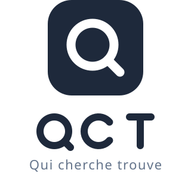

QCT — Qui cherche trouve
Planche de marque · concept 3 · icône applicative et signature
Verrouillage horizontal
Fond clair — usage principal
Fond sombre — en-têtes, footer, splash screen
Verrouillage vertical et monochrome

Vertical — supports carrés, réseaux sociaux
Monochrome — impression une couleur, tampon, fax
Icône applicative
Couleurs
Encre#1e293b
Blanc#ffffff
Signature#64748b
Signature inversée#cbd5e1
Règles d'usage
- Zone de protection : 36 px pour une icône de 160 px, soit le rayon de la lentille. Aucun élément graphique ni texte dans cette zone.
- Taille minimale du verrouillage horizontal : 140 px de large. En dessous, utiliser l'icône seule.
- Ne pas modifier les proportions, la graisse des traits, l'inclinaison du manche ni la couleur du badge.
- Sur photographie, utiliser la version inversée posée sur un aplat #1e293b à 90 % d'opacité.
- La signature « Qui cherche trouve » reste un texte vectoriel : la convertir en courbes avant diffusion externe.